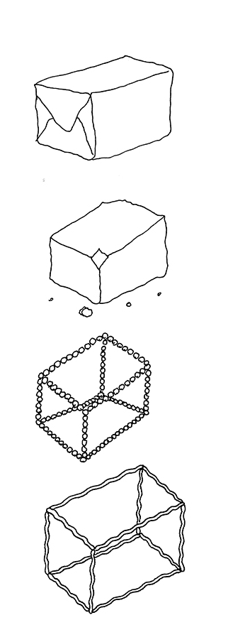

Q/?: Weapons of Math Destruction

[A few years ago we read and discussed Weapons of Math Destruction by Cathy O’Neil. Here some questions we would ideally like to pose to the author, if we ever get to meet her (in collaboration with Giuseppe De Nicolao)]
Question 1. “Models are opinions embedded in mathematics” (quote from the book). My question will focus on the educational aspect of maths, as one of the key subjects we are taught in school, from the early years until the end of high school. I wonder whether a reshaping of the very way in which the subject is presented by teachers is not more urgent than ever. Sadly, too many students graduate without a great appreciation of the beauty of maths, and, perhaps above all, a sufficient understanding of its nature and purposes. I feel that mathematics is easily reduced to mere memorising of notions and equations, or is at least perceived as such for the most part. That may especially be the case where standardised testing, for example in the form of multiple choice questions, has become the main criteria for evaluating the students’ knowledge. In what ways do you think we could change the current school system, in order to make the situation better? Are we even – perhaps – in need of completely new, radical approaches to the subject, to get rid of the most fundamental misconceptions around maths?
Question 2. Are we beyond the point of no return? You end your book with the hope that in the future WMD will be recalled as “the deadly coal mines of a century ago”. However, there is major difference. The deadliness of a coal mine is visible, while WMD are pervasive but often invisible to the layman. This means that it will be very difficult to promote and enforce regulations that limit abuses, especially when big corporations have all the interest in belittling the dangers. To increase awareness we would need an extraordinary effort by schools and academia, but both of them are under siege. Not only their staff is subject to WMD (see e.g. teachers and scholars evaluations) but industrial grants drive academic research toward commercially exploitable results rather than to study effects, dangers and countermeasures.
Question 3: I found a good complement to your book in the recent volume by J. Z. Muller, entitled, “The Tyranny of Metrics”. Although not all WMD deal with metrics of performance, the cultural roots of the positivistic faith in quantitative metrics of performance is the same that encourages the adoption of WMD as “magic wands”, even when they are prone to backfiring. Rather surprisingly, these roots trace back to more than a century ago (in 1862 the UK Parliament discussed school funding based on “payment by results”). Is it possible to stop the overall drift without a historical/epistemological awareness of the limits and failures of scientism, especially for what concerns education, health, welfare and civil rights? Do we need to understand more about data science but also more about history and ethics?
Question 4: The political project of the European Union is in trouble, if not in shambles, in so many ways and for so many reasons that it’s impossible to make a general point right now. So I will twist this question in a very personal way. I happen to be in contact with a community of local farmers that somehow manage to work outside of any rule – and that produce the best vegetables… To them, EU regulations are (very rudimentary) WMDs that are disrespectful of their historical traditions on how to produce and conserve foods. On the other hand, only after reading your book I realized how much the EU has actually protected EU citizens from certain extreme abuses in the treatment of data that US citizens experience, and I wondered whether any isolated European nation would have been able, alone, to combat the pressure of corporations enforcing such heavy WMDs. So, like any European citizen right now, I am very, very confused. My question is: as an American, looking at Europe, are you also confused? What can you say about the difference in the application of WMDs between US and EU? And after your experiences as an activist, do you have any suggestions on how to act?
Question 5: The radical thinker Ivan Illich proposed an analysis of the process of industrialization of social services. He argued that it follows three phases: 1) a complex service (education, health) is evaluated in terms of a single number (e.g. alphabetization, life expectancy); 2) the optimization of the number is fetishized and becomes the only objective; 3) one reaches a plateau in which every additional effort produces a negative result. Academia has its own obsession with optimizing numbers: H-index, number of publications, impact factor etc. The impression sometimes is that any additional journal, article, conference, etc. increases the noise and diminishes knowledge. As a former researcher, what is your analysis of modern academic production in the light of WMDs? Was this phenomenon part of your decision of leaving academia?
REFERENCES
Muller, Jerry Z. The tyranny of metrics. Princeton University Press, 2018.
Ewing, John. “Mathematical intimidation: Driven by the data.” Notices of the AMS 58.5 (2011): 667-673.http://www.ams.org/notices/201105/rtx110500667p.pdf
Wilsdon, James. The metric tide: Independent review of the role of metrics in research assessment and management. Sage, 2016.http://eprints.whiterose.ac.uk/117033/1/2015_metric_tide.pdf
Ivan Illich, Tools of Conviviality (1973)